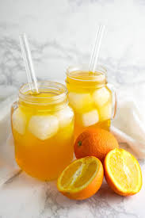

Home
Homemade Orange Soda

This recipe will make a fantastic summer treat for you and your friends to enjoy!
- 1/4 cup water
- 1/4 cup honey
- 1/4 cup maple syrup
- 1 teaspoon vanilla extract
- 11/2 cups orange juice
- 11/2 cups sparkling water
- Combine the water, maple syrup, honey, and vanilla extract in a small saucepan over medium
heat and stir constantly 2-3 minutes, until well-mixed and somewhat thickened.
- Remove from heat and chill thoroughly.
- Divide the orange juice and sparkling water evenly between four ice-filled 8-ounce
glasses, add syrup to taste, and stir well before serving.